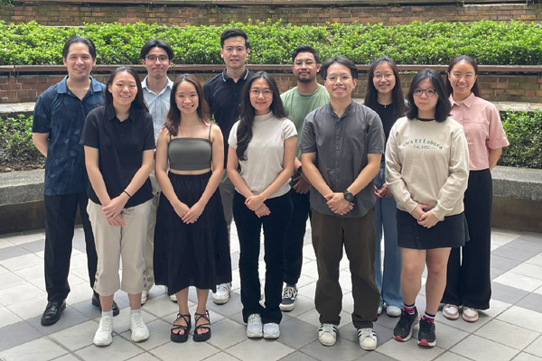
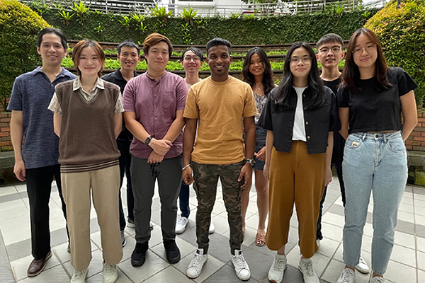
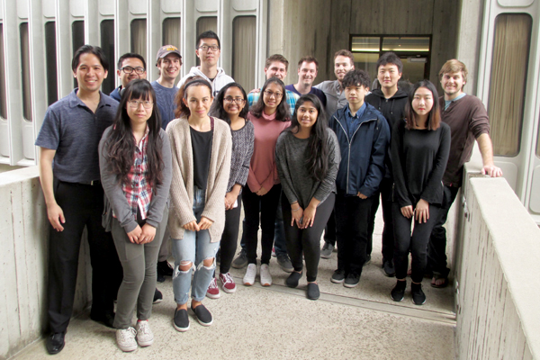
The Learning Sciences Laboratory brings together students and researchers interested in understanding how people learn and remember. Our work draws on cognitive psychology, cognitive neuroscience, educational psychology, and the learning sciences to investigate the processes that support effective learning and to develop evidence-based approaches to improving learning. The team includes current students, alumni, and affiliated researchers who contribute to the lab’s research and activities.
Steven C. Pan, PhD is an Assistant Professor in the Department of Psychology at the National University of Singapore and Principal Investigator of the Learning Sciences Laboratory. His scholarship connects cognitive and educational psychology to questions about human learning and memory, with an emphasis on understanding how learning can be made more durable and transferable and how findings from basic cognitive science can inform educational practice. Dr. Pan has served as an Associate Editor for Educational Psychology Review and as an editorial board member for multiple journals in cognitive and educational psychology, including Psychological Bulletin, Learning and Instruction, and Journal of Educational Psychology. Dr. Pan received his PhD in Experimental Psychology from the University of California, San Diego in 2018 and completed a Chancellor’s Postdoctoral Fellowship at the University of California, Los Angeles in 2021. LinkedIn: https://www.linkedin.com/in/steven-pan-phd/ | Bluesky: stevencpan.bsky.social | Email: scp@nus.edu.sg | CV
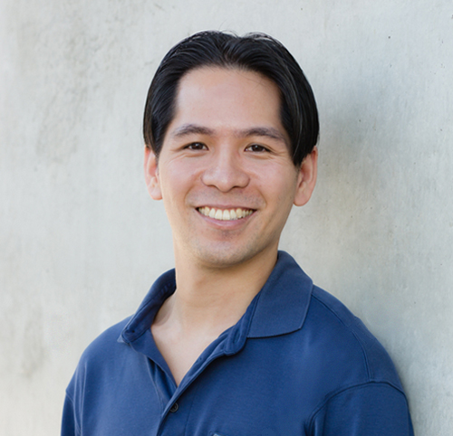
Alyssa Indrajaya is a PhD student in Psychology at the National University of Singapore. In the Learning Sciences Laboratory, she investigates active learning strategies, with a particular interest in prequestioning—having learners make guesses before learning the correct answer—and how it can support learners’ emotional and metacognitive learning outcomes. Her current research examines how prequestioning may influence test anxiety and metacomprehension—learners’ ability to accurately judge what they do and do not understand. Her broader goal is to equip learners with effective, evidence-based learning techniques that may not come intuitively, helping learners increase their competence and confidence throughout the educational journey. Originally from Indonesia, Alyssa completed her Bachelor’s in Psychology at the University of California, Berkeley, where she gained clinical experience in applied behavioral analysis and research experience in sleep psychology, before finally pivoting to learning sciences. Outside of research, she enjoys reading, swimming, and beta-testing her younger brother’s computer games. Email: alyssa.indrajaya@u.nus.edu | CV
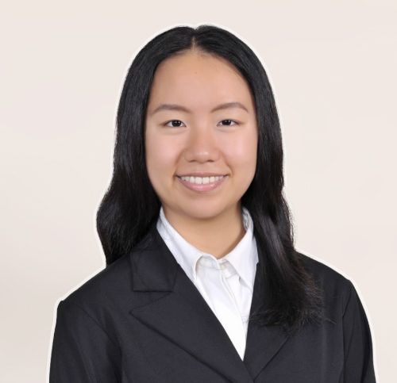
Rashida Khudiyeva is a PhD student in Psychology at the National University of Singapore. Her research centers on learning, memory, attention, and the cognitive processes underlying effective learning. In the Learning Sciences Laboratory, her current work examines how instructional strategies shape learning, with particular interests in prequestioning, cognitive load, and the use of AI to support active and durable learning. Across these projects, she uses different eye-tracking systems to investigate the attentional and cognitive processes that unfold during learning. Before beginning her PhD, she studied Linguistics at the undergraduate level and later completed a master's degree in Applied Linguistics, a trajectory that continues to inform her interests in language, cognition, and learning. Her broader academic background includes experience with EEG and fMRI, alongside educational experience spanning the teaching of middle- and high-school students, undergraduate- and graduate-level teaching assistance, and the development of educational materials tailored to immigrant learners in nonprofit educational settings. Of her many interests, she has a particular affinity for science fiction, both as a reader and a writer. Inspired from an early age by Kir Bulychev, Jules Verne, and H. G. Wells, she retains a fascination with time travel in literature and film. Email: rashidak@u.nus.edu
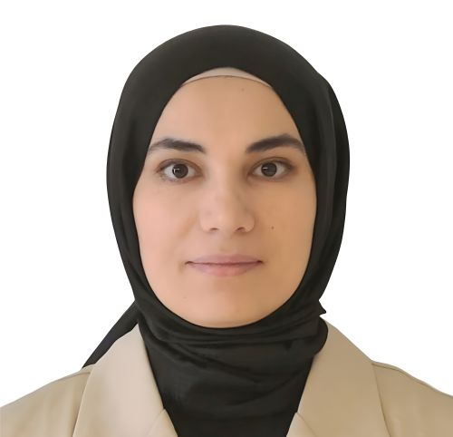
Ganeash Selvarajan is a PhD student in Psychology at the National University of Singapore. He is interested in questions about how individual differences in cognition and affect shape human inductive learning (i.e., the ability to make accurate generalisations from sparse data). His work asks how some learners extract robust category structure from a handful of examples while others struggle to do so, and whether working memory, fluid intelligence, episodic memory, and anxiety moderate the effectiveness of different study strategies. Overall, he seeks to characterise not only what strategies work on average, but for whom, under what conditions and why. He hopes to translate these insights into adaptive learning technologies that optimise learning benefits based on individual cognitive profiles. Beyond his lab role, he works with a team of virtual reality programmers and clinicians to develop cognitive rehabilitation exercises for stroke survivors (for reference: NTU HEY, NUS MGC). Ganeash first joined the Learning Sciences Laboratory as an Honours student, contributing to multiple published works, and received the NUS Outstanding Undergraduate Research Prize. Outside of research, he enjoys reading, travelling, and watching mainstream anime shows. Email: ganeash@u.nus.edu
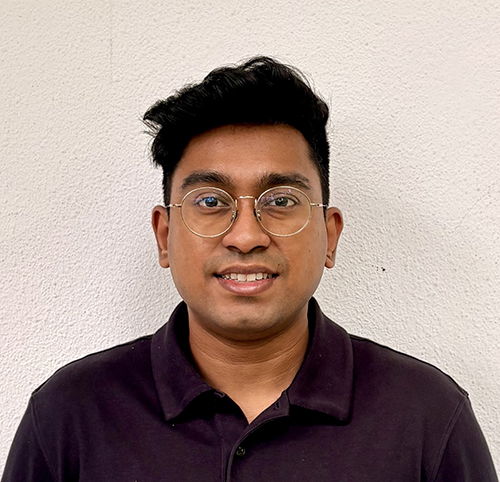
Liwen Yu is a PhD student in Psychology at the National University of Singapore, where she is affiliated with the Learning Sciences Laboratory. She primarily conducts her research in the Child Development Lab under the supervision of Dr. Xiaopan Ding. Her research interests include exploring the nature of the human mind through research with children, with a particular interest in how a better understanding of children’s world can contribute to understanding people more broadly. Among her research works, she has investigated mechanisms behind children's lying behaviour and explored how to promote honesty in children. Through her work with the Learning Sciences Laboratory, she has been involved in multiple published studies addressing effects of prequestioning with young children, individual differences in working memory capacity and fluid intelligence in relation to the efficacy of pretesting and interleaving on learning, and forgetting curve research. She is also interested in developing her research skills and gaining insights into child development through her doctoral training. Email: e0966388@u.nus.edu
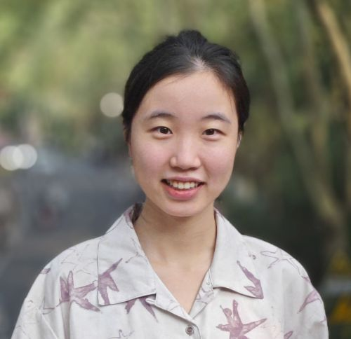
Ahmad Naufal is a PhD student in Psychology at the National University of Singapore, where he is affiliated with the Learning Sciences Laboratory. He primarily conducts his research in the Psycholinguistics Laboratory under the supervision of Prof. Melvin Yap. His research interests focus on language processing and reading acquisition, with a current emphasis on the morphological processes involved in the Malay language. His work is motivated by the saying, "First we learn to read, then we read to learn," as he views literacy as a pivotal social mobility skill that impacts everything from academic success to navigating daily life. Naufal first joined the Learning Sciences Laboratory during his undergraduate studies, contributing to projects on foreign language vocabulary acquisition and interleaved practice. He also completed an Honours Thesis and was a UROP-REx scholar. Beyond research, Naufal is an avid gamer and enjoys playing badminton. Email: ahmad.naufal@u.nus.edu
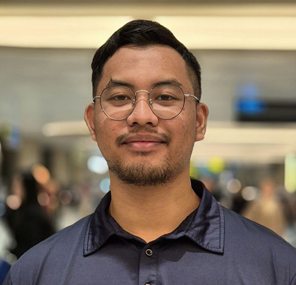
Gayathri Devendaran Naidu, who goes by Gaya, is a graduate student in the Concurrent Degree Programme at the National University of Singapore, where she is pursuing a Master of Social Sciences in Psychology alongside a Bachelor of Social Sciences (Honours) degree. Her research interests include how people learn from errors made by others, including whether identifying and correcting these errors can strengthen memory and understanding. She is also interested in how social contexts influence people’s willingness to seek feedback and shape their learning-related decisions and behaviours. In the Learning Sciences Laboratory, her current research examines whether people learn from others’ errors and whether actively detecting and correcting these errors can strengthen memory and understanding. She is also assisting with a classroom-based study examining students’ learning and performance when they complete pre-tests, post-tests, or both. Outside of academics, she enjoys hiking mountains, taking very long walks across Singapore, such as the Coast-to-Coast Trail, and watching Korean dramas. Email: e0969314@u.nus.edu
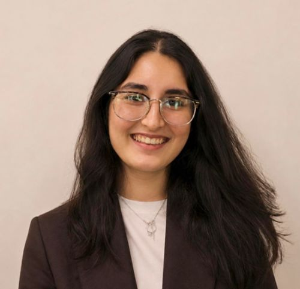
David Chng Guang Ze is a graduate student in Psychology at the National University of Singapore under the Concurrent Degree Programme, where he is pursuing a Master of Social Sciences in Psychology. His research interests centre on learning and memory, particularly how instructional design can support the understanding and transfer of abstract concepts. His interest in this area grew from his own experience reading philosophy, where conceptually demanding theories can be difficult to understand, distinguish, and apply. This experience led him to ask how such ideas might be taught more effectively without oversimplifying them. His current research examines how interleaved versus blocked learning and example-based versus principle-based instruction affect learners’ ability to differentiate and apply abstract philosophical theories. More broadly, he hopes to identify learning strategies that make complex material more accessible across disciplines while preserving its conceptual depth. Outside research, David continues to read widely in philosophy and theology and enjoys boxing and playing floorball. Email: e1121294@u.nus.edu
Tabitha Chua Jia En, MS completed a Master of Social Sciences in Psychology (Concurrent Degree Programme) in 2026, alongside a Bachelor of Social Sciences (Honours) in Psychology at NUS. In the Learning Sciences Laboratory, her Master’s thesis examined how pretesting can enhance learning of word-picture associations, and this work was featured by NUS News and in international coverage. In 2025, she received a Psychonomic Society Graduate Travel Award and was selected as a Data Blitz presenter at the Psychonomic Society Annual Meeting. Prior to NUS, she completed her secondary and pre-university education at St. Joseph’s Institution International and her primary education at Singapore International School. She also completed her Student Exchange Programme at Boston University. Since graduation, Tabitha has become a Research Associate at the Centre for Lifelong Learning and Individualised Cognition (CLIC), a joint collaboration between the University of Cambridge and NTU.
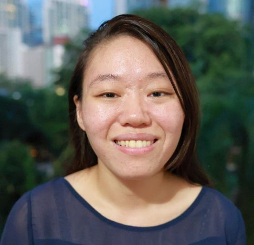
Dong Rui, PhD joined the Learning Sciences Laboratory as a visiting PhD student in residence at NUS from 2024 to 2025. His research focuses on the cognitive mechanisms underlying children's literacy learning and related instructional approaches. In the Learning Sciences Laboratory, he conducted research examining the effects of different testing approaches (pretesting and posttesting) on spelling acquisition and learning under the supervision of Prof. Pan. He investigated these approaches in both Chinese character and English word spelling and further explored whether previous findings could be extended to the learning of spelling knowledge and word roots. The first publication from this work was published in 2026. He has also conducted other research on reading and writing, exploring the roles of abilities such as visual-motor integration and working memory. After receiving his PhD from Tsinghua University, he is currently a postdoctoral researcher there.
Andy Teo, MS completed a Bachelor of Social Sciences in Psychology with a minor in Forensic Science at NUS in 2024, followed by a Master of Science in Forensic Science in 2026. In the Learning Sciences Laboratory, his thesis examined the potential of AI-generated prequestioning for enhancing memory and comprehension of educational texts. The findings from this study, which spanned four experiments, were published in 2025. In addition to his research involvement in the Learning Sciences Laboratory, which included co-authorship on multiple publications, Andy conducts research in clinical and forensic psychology. His work has contributed to CTLT Teaching Connections on university students' mental health and coping strategies and has been published in law and psychiatry journals, including research examining intellectual functioning and disability in Singapore's legal landscape.
Faith Amanda Siauw, MS completed a Master of Social Sciences in Psychology (Concurrent Degree Programme) in 2025, alongside a Bachelor of Social Sciences with a double major in Psychology and Japanese Studies at NUS. As a member of the Learning Sciences Laboratory, her Master’s thesis examined how pretesting impacts learning of different key terms, both tested and untested, from facts. The findings from this study, which spanned over eight experiments, were published in 2026. In addition to her NUS studies, Faith completed her Student Exchange Programme at Keio University and was one of the inaugural students in the University of Tokyo’s UTokyo Global Unit Courses programme, completing cultural studies and advanced Japanese language coursework. Since graduation, Faith has become a policy officer in the civil service.
Michelle Kaku
Kah Liang Tan
Elisya Tung
Joel Tan
Ganeash Selvarajan
Marcus Wong
Thet Hnin Khin Khin
Ahmad Naufal
Cai Ping Wee
Prathibaa Ramesh
Raphael Goh
Chloe Tay
Arvindsham Aruldas
Ashleigh Png
Claudia Phua Jia-Min
Cui Zihan
Genevieve Pang
Janelle Tan Kiat Min
Janson Yap
Laryl Gan Han Sing
Lee Harn Yi
Mavrix Tan
Megan Oh Wen Xi
Moorthy Kowshiyadharshini
Sehnaz Noorfat
Victoria Lim
Benedict Yew
Cao Zhikai
Chen Kaigene
Charis Kwok
Chong Hui Sin
David Chng Guang Ze
Desmond Poh
Elise Lim Jia Jing
Hengyi Guo
Jane Lee Puei Yee
Josiah Hoo
Justina Tan
Luke Chiang
Nathaneal Teo
Ryan Matthew Jones
Shruthi Kumar
Valerie Tan
Wen Kai Ling
Yilin Hong
Zheng Jie Lim
Dev Fernando
Hieu Vu Minh
Tianyue Qu
Tung Sze Lin